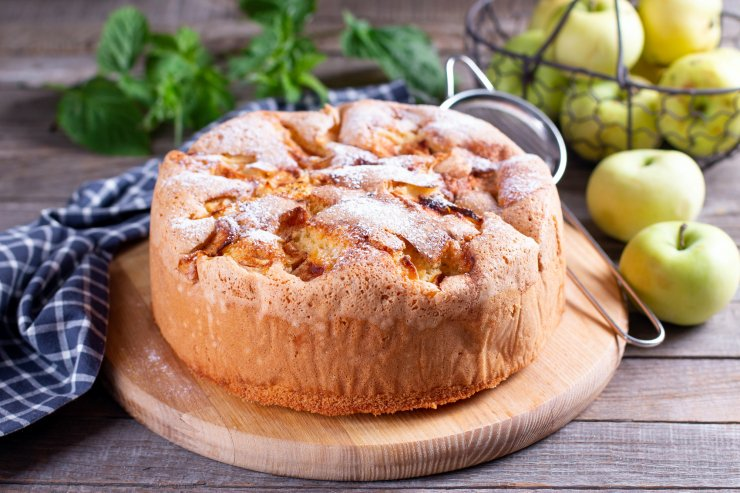
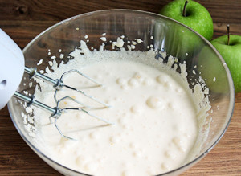
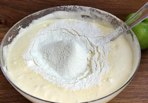
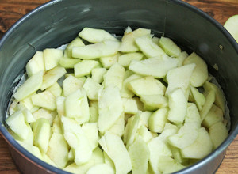
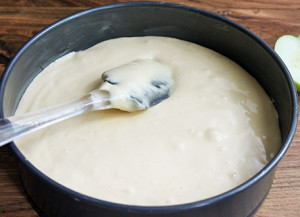

Класична шарлотка з яблуками в духовці
Як приготувати класичну шарлотку з яблуками
Пишна, ніжна і просто тане в роті шарлотка не може не подобатися! Цей солодкий, яблучний десерт родом з Німеччини. Він
давно підкорив всіх своєю простотою і незабутнім смаком. Вміти готувати його має кожна справжня господиня. Можна
скористатися наступними безпрограшними рецептом.

Інгридієнти:
-
борошно вищого сорту - 1 стакан
-
цукор - 1 стакан
-
курячі яйця - 4 штуки
-
розпушувач тіста або
сода гашена оцтом - 1/2 ч. л.
-
яблука - 3 або 4 великих
-
вершкове масло для змащування форми
Час приготування:
60 хвилин.
Калорійність на 100 грам:
165 Ккал.
Покрокова інструкція приготування:
-
У глибоку посудину розбити яйця, висипати весь цукор і збити міксером або віночком. Отримана заготовка для тіста
збільшиться в розмірі приблизно в три рази, вона повинна вийти ніжно кремового кольору.
В декілька заходів просіваємо борошно, кожен раз перемішуємо, щоб не було грудочок. Борошно заздалегідь змішати з
розпушувачем або гашеного содою.

-
Суміш збити кухонним міксером на невеликій швидкості. Збивати недовго, до отримання однорідного стану.

-
Яблука необхідно відчистити від шкірки, вирізати середину і нарізати не дуже товстими скибочками або кубиками. Після
змішати тісто з нарізаними яблуками.

-
Вилити рідке тісто в змащену вершковим маслом ємність для готування. Помістити в розігріту до 180 градусів духовку і
випікати 40-45 хвилин. Зокрема, саме від висоти ємності змінюється час випічки, чим вище форма, тим довше готується, і
навпаки. Готовність можна перевірити, скориставшись дерев'яним сучком або зубочисткою. Необхідно проткнути пиріг в
самому товстому місці, якщо паличка суха, значить, готово.

Приємного апетиту!